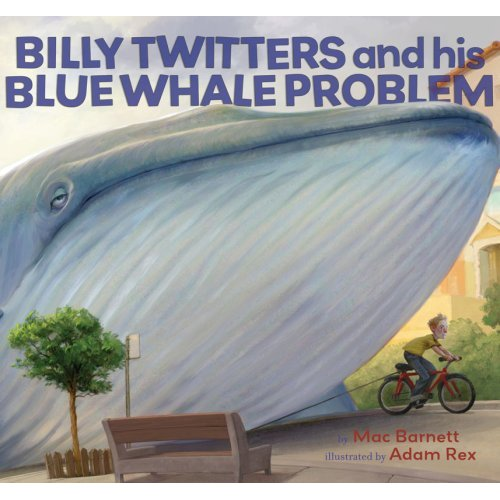
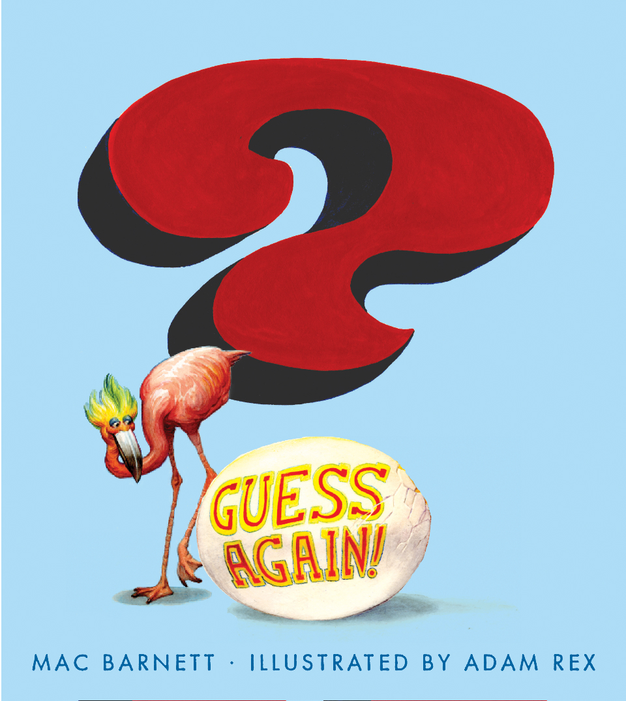
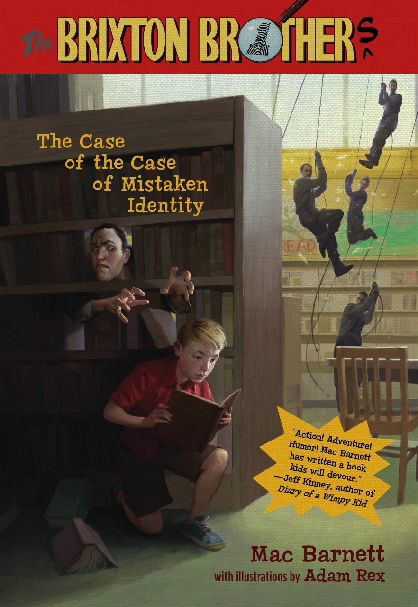

Purchase Mac's books from your favorite online bookseller

BILLY TWITTERS AND HIS BLUE WHALE PROBLEM
Illustrated by Adam Rex
A blue whale is longer than thirty dogs lined up nose to tail. Its tongue weighs as much as four hundred cats. Blue whales make terrible, terrible pets. Just ask Billy Twitters.
"Definitely funny and slyly subversive." (Kirkus, Starred Review, 1 May 2009)
An IndieBound Top Ten Kid's Indie Next List Pick (Summer 2009)

COMING SEPTEMBER
GUESS AGAIN!
Illustrated by Adam Rex
This is a book that will keep you guessing again and again and...

COMING OCTOBER
THE BRIXTON BROTHERS #1: THE CASE OF THE CASE OF MISTAKEN IDENTITY
Illustrated by Adam Rex
This is the first adventure of world-famous twelve-year-old detective Steve Brixton. Will Steve solve his first case? Since when can librarians rappel from helicopters? If Steve's an only child, then why is this series called the Brixton Brothers? You will solve all these mysteries and more by the time you finish this book. We think you'll agree: Steve Brixton's first adventure is his best adventure yet.